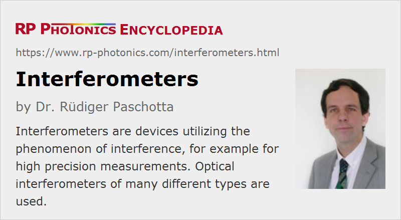

Interferometers
Definition: optical devices utilizing the phenomenon of interference
More specific terms: common-path interferometers, Fabry–Perot interferometers, Fizeau interferometers, Gires–Tournois interferometers, Mach–Zehnder interferometers, Michelson interferometers, Twyman–Green interferometers, white light interferometers
German: Interferometer
Categories: photonic devices, optical metrology
How to cite the article; suggest additional literature
Author: Dr. Rüdiger Paschotta
An interferometer is an optical device which utilizes the effect of interference. Typically, it is based on the following operation principle: it starts with some input beam, splits it into two separate beams with some kind of beam splitter (a partially transmissive mirror), possibly exposes some of these beams to some external influences (e.g. some length changes or refractive index changes in a transparent medium), and recombines the beams on another beam splitter. The power or the spatial shape of the resulting beam can then be used e.g. for a measurement.
Interferometers frequently need to be made from high quality optical elements. For example, one often uses optical flats with a high degree of surface flatness.
Types of Interferometers
Mach–Zehnder Interferometer
The Mach–Zehnder interferometer was developed by the physicists Ludwig Mach and Ludwig Zehnder. As shown in Figure 1, it uses two separate beam splitters (BS) to split and recombine the beams, and has two outputs, which can e.g. be sent to photodetectors. The optical path lengths in the two arms may be nearly identical (as in the figure), or may be different (e.g. with an extra delay line). The distribution of optical powers at the two outputs depends on the precise difference in optical arm lengths and on the wavelength (or optical frequency).
If the interferometer is well aligned, the path length difference can be adjusted (e.g. by slightly moving one of the mirrors) so that for a particular optical frequency the total power goes into one of the outputs. For misaligned beams (e.g. with one mirror being slightly tilted), there will be some fringe patterns in both outputs, and variations of the path length difference affect mainly the shapes of these interference patterns, whereas the distribution of total powers on the outputs may not change very much.
Michelson Interferometer
A Michelson interferometer, as invented by Albert Abraham Michelson, uses a single beam splitter for separating and recombining the beams. If the two mirrors are aligned for exact perpendicular incidence (see the upper figure), only one output is accessible, and the light of the other output goes back to the light source. If that optical feedback is unwanted (as is often the case with a laser, which might be destabilized), and/or access to the second output is required, the recombination of beams can occur at a somewhat different location on the beam splitter. One possibility is to use retroreflectors, as shown in the lower figure; this also has the advantage that the interferometer is fairly insensitive to slight misalignment of the retroreflectors. Alternatively, simple mirrors at slightly non-normal incidence can be used.
If the path length difference is non-zero, as shown in both parts of the figure, constructive or destructive interference e.g. for the downward-directed output can be achieved only within a finite optical bandwidth. Michelson originally used a broadband light source in the famous Michelson–Morley experiment, so that he had to build an interferometer with close to zero arm length difference.
There are many variations of the Michelson interferometer. For example, a Twyman–Green interferometer is essentially a Michelson interferometer with expanded beams in its arms. It is used for characterizing optical elements.
For more details, see the articles on Michelson interferometers and Twyman–Green interferometers.
Fabry–Pérot Interferometer
A Fabry–Pérot interferometer (Figure 3) consists of two parallel mirrors, allowing for multiple round trips of light. (A monolithic version of this can be a glass plate with reflective coatings on both sides.) For high mirror reflectivities, such a device can have very sharp resonances (a high finesse), i.e. exhibit a high transmission only for optical frequencies which closely match certain values. Based on these sharp features, distances (or changes of distances) can be measured with a resolution far better than the wavelength. Similarly, resonance frequencies can be defined very precisely.
A modified version is the Fizeau interferometer, which is used for characterizing optical surfaces.
Another special kind of Fabry–Pérot interferometer, used for dispersion compensation, is the Gires–Tournois interferometer.
For more details, see the articles on Fabry–Pérot interferometers.
Sagnac Interferometer
A Sagnac interferometer (named after the French physicist Georges Sagnac) uses counterpropagating beams in a ring path, realized e.g. with multiple mirrors (as in Figure 4) or with an optical fiber. If the whole interferometer is rotated e.g. around an axis which is perpendicular to the drawing plane, this introduces a relative phase shift of the counterpropagating beams (Sagnac effect). The sensitivity for rotations depends on the area covered by the ring, multiplied by the number of round trips (which can be large e.g. when using many turns in an optical fiber). It is possible e.g. to obtain a sensitivity which is sufficient for measuring the rotation of the Earth around its axis.
Sagnac interferometers are used e.g. in inertial guidance systems.
Common-path Interferometers
Common-path interferometers use a common beam path but e.g. different polarization states for the two beams. This has the advantage that fluctuations of the geometric path length do not affect the interferometer output, whereas the interferometer can be a sensitive detector for birefringence. The Sagnac interferometer (see above) is another example; here, the interfering beams have opposite propagation directions.
Fiber Interferometers
All the interferometer types discussed above can also be implemented with optical fibers. Instead of beam splitters, one then uses fiber couplers.
A potential difficulty is that the polarization state of light may change during propagation in the fiber. This often requires one to include a fiber polarization controller (which may occasionally have to be readjusted) or to use polarization-maintaining fibers.
Also note that temperature changes in the fibers (as well as bending) can affect the optical phase shifts. This can be a problem if different fibers belong to different interferometer arms. However, there are also fiber interferometers where one fiber serves for both arms, e.g. using two different polarization directions in the same fiber.
Physical Principles of Interferometers
There are also substantially different principles of using interferometers. For example, Michelson interferometers are used in very different ways, using different types of light sources and photodetectors:
- When a light source with low optical bandwidth is used (perhaps even a single-frequency laser), the detector signal varies periodically when the difference in arm lengths is changed. Such a signal makes it possible to do measurements with a depth resolution well below the wavelength, but there is an ambiguity. For example, a monotonic increase or decrease of the arm length difference leads to the same variation of the detected signal. This problem may be solved by modulating the arm length difference e.g. with a vibrating mirror (or with an optical modulator) and by monitoring the resulting modulation on the detector in addition to the average signal power. Simultaneous operation of an interferometer with two wavelengths is another way of removing the ambiguity.
- If the detector is a kind of camera (e.g. a CCD chip) and the surfaces monitored are fairly smooth, the phase profile (and thus the profile of optical path length) can be reconstructed by recording several images with different overall phase shifts (phase-shifting interferometry). A phase-unwrapping algorithm can be used to retrieve unambiguously surface maps extending over more than a wavelength. However, such methods may not work for rough surfaces or for surfaces with steep steps.
- A white light interferometer uses a broadband light source (e.g., a superluminescent diode), so that interference fringes are observed only in a narrow range around the point of zero arm length difference. In that way, the above-mentioned ambiguity is effectively removed.
- A wavelength-tunable laser can be used to record the detector signal for different optical frequencies. From such signals, the arm length difference can be unambiguously retrieved. This works also with two-dimensional detectors (e.g. CCD cameras).
- If one of the mirrors is intentionally tilted, an interference fringe pattern is obtained. Any change in arm length difference will then move the fringe pattern. This method makes it possible to measure phase changes sensitively and also to measure position-dependent phase changes, e.g. in some optical element.
Another class of interferometric methods is named spectral phase interferometry. Here, interference in the spectral domain is exploited. The spectral modulation period is essentially determined by a time delay.
Applications
Interferometers can be used for many different purposes – by far not only for length measurements. Some examples are:
- for the measurement of a distance (or changes of a distance or a position, i.e., a displacement) with an accuracy of better than an optical wavelength (in extreme cases, e.g. for gravitational wave detection, with a sensitivity many orders of magnitude below the wavelength)
- for measuring the wavelength e.g. of a laser beam (→ wavemeter), or for analyzing a beam in terms of wavelength components
- for monitoring slight changes in an optical wavelength or frequency (typically using the transmission curve of a Fabry–Pérot interferometer) (frequency discriminators)
- for measuring rotations (with a Sagnac interferometer)
- for measuring slight deviations of an optical surface from perfect flatness (or from some other shape)
- for measuring the linewidth of a laser (→ self-heterodyne linewidth measurement, frequency discriminator)
- for revealing tiny refractive index variations or induced index changes in a transparent medium
- for modulating the power or phase of a laser beam, e.g. with a Mach–Zehnder modulator in an optical fiber communication system
- for measurements of the chromatic dispersion of optical components
- as an optical filter
- for the full characterization of ultrashort pulses via spectral phase interferometry
Depending on the application, the demands on the light source in an interferometer can be very different. In many cases, a spectrally very pure source, e.g. a single-frequency laser is required. Sometimes, the laser has to be wavelength-tunable. In other cases (e.g. for dispersion measurements with white light interferometers), a light source with a very broad and smooth optical spectrum is required.
Noise Influences
Interferometric measurements can be subject to laser noise, but often also from quantum noise influences. Typically, vacuum noise entering the open input port at a beamsplitter defines the standard quantum limit (shot noise limit) for the sensitivity [2, 5]. A noise level below that limit can be achieved by injecting squeezed states of light into an interferometer [2, 4, 12].
Suppliers
The RP Photonics Buyer's Guide contains 50 suppliers for interferometers. Among them:
Questions and Comments from Users
Here you can submit questions and comments. As far as they get accepted by the author, they will appear above this paragraph together with the author’s answer. The author will decide on acceptance based on certain criteria. Essentially, the issue must be of sufficiently broad interest.
Please do not enter personal data here; we would otherwise delete it soon. (See also our privacy declaration.) If you wish to receive personal feedback or consultancy from the author, please contact him e.g. via e-mail.
By submitting the information, you give your consent to the potential publication of your inputs on our website according to our rules. (If you later retract your consent, we will delete those inputs.) As your inputs are first reviewed by the author, they may be published with some delay.
Bibliography
| [1] | A. Labeyrie, “Stellar interferometry methods”, Am. Rev. Astrom. Astrophys. 16, 77 (1978), doi:10.1146/annurev.aa.16.090178.000453 |
| [2] | C. M. Caves, “Quantum-mechanical noise in an interferometer”, Phys. Rev. D 23 (8), 1693 (1981), doi:10.1103/PhysRevD.23.1693 |
| [3] | K. Creath, “Phase-shifting speckle interferometry”, Appl. Opt. 24 (18), 3053 (1985), doi:10.1364/AO.24.003053 |
| [4] | M. Xiao et al., “Precision measurement beyond the shot-noise limit”, Phys. Rev. Lett. 59 (3), 278 (1987), doi:10.1103/PhysRevLett.59.278 |
| [5] | M. T. Jaekel and S. Reynaud, “Quantum limits in interferometric measurements”, Europhys. Lett. 13, 301 (1990), doi:10.1209/0295-5075/13/4/003 |
| [6] | D. Shoemaker et al., “Prototype Michelson interferometer with Fabry-Perot cavities”, Appl. Opt. 30 (22), 3133 (1991), doi:10.1364/AO.30.003133 |
| [7] | P. Fritschel et al., “Demonstration of light recycling in a Michelson interferometer with Fabry-Perot cavities”, Appl. Opt. 31 (10), 1412 (1992), doi:10.1364/AO.31.001412 |
| [8] | S. Diddams and J.-C. Diels, “Dispersion measurements with white-light interferometry”, J. Opt. Soc. Am. B 13 (6), 1120 (1996), doi:10.1364/JOSAB.13.001120 |
| [9] | R. Dandliker et al., “Distance measurement by multiple-wavelength interferometry”, J. Opt. 29 (3), 105 (1998), doi:10.1088/0150-536X/29/3/002 |
| [10] | J. M. Schmitt, “Optical coherence tomography (OCT): a review”, J. Sel. Top. Quantum Electron. 5 (4), 1205 (1999), doi:10.1109/2944.796348 |
| [11] | J. D. Monnier, “Optical interferometry in astronomy”, Rep. Prog. Phys. 66 (5), 789 (2003), doi:10.1088/0034-4885/66/5/203 |
| [12] | A. Thüring et al., “Broadband squeezing of quantum noise in a Michelson interferometer with Twin-Signal-Recycling”, Opt. Lett. 34 (6), 824 (2009), doi:10.1364/OL.34.000824 |
| [13] | J. Biophoton. 2 (6-7) (2009): special issue on optical coherence tomography |
| [14] | B. P. Abbott et al., “Observation of gravitational waves from a binary black hole merger”, Phys. Rev. Lett. 116 (6), 061102 (2016), doi:10.1103/PhysRevLett.116.061102 |
| [15] | C. Hilweg et al., “Gravitationally induced phase shift on a single photon”, New J. Phys. 19, 033028 (2017), doi:10.1088/1367-2630/aa638f |
See also: interference, optical phase, spectral phase interferometry, Michelson interferometers, Twyman–Green interferometers, Gires–Tournois interferometers, Fabry–Pérot interferometers, Fizeau interferometers, white light interferometers, optical metrology, distance measurements with lasers, optical heterodyne detection, wavelength
and other articles in the categories photonic devices, optical metrology

This encyclopedia is authored by Dr. Rüdiger Paschotta, the founder and executive of RP Photonics Consulting GmbH. How about a tailored training course from this distinguished expert at your location? Contact RP Photonics to find out how his technical consulting services (e.g. product designs, problem solving, independent evaluations, training) and software could become very valuable for your business!
|  |
If you like this page, please share the link with your friends and colleagues, e.g. via social media:
These sharing buttons are implemented in a privacy-friendly way!